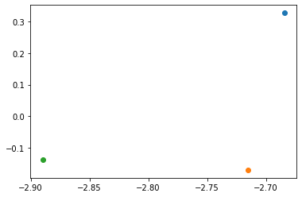

Tugas 5 (K-Means Clustering)
Tugas 5 (K-Means Clustering)#
Pemblokiran indentasi
K-Means
import numpy as np # linear algebra
import pandas as pd # data processing, CSV file I/O (e.g. pd.read_csv)
import matplotlib.pyplot as plt
import seaborn as sns
url = 'https://raw.githubusercontent.com/AmandaCaecilia/datamining/main/Iris.csv'
columns = ['sepal-length','sepal-width','petal-length','petal-width','class']
data = pd.read_csv(url)
data.drop(columns='Id',inplace=True)
x = data.values[:, 0:4]
y = data.values[:,4]
from sklearn import preprocessing
le = preprocessing.LabelEncoder()
label = le.fit_transform(y)
label
array([0, 0, 0, 0, 0, 0, 0, 0, 0, 0, 0, 0, 0, 0, 0, 0, 0, 0, 0, 0, 0, 0,
0, 0, 0, 0, 0, 0, 0, 0, 0, 0, 0, 0, 0, 0, 0, 0, 0, 0, 0, 0, 0, 0,
0, 0, 0, 0, 0, 0, 1, 1, 1, 1, 1, 1, 1, 1, 1, 1, 1, 1, 1, 1, 1, 1,
1, 1, 1, 1, 1, 1, 1, 1, 1, 1, 1, 1, 1, 1, 1, 1, 1, 1, 1, 1, 1, 1,
1, 1, 1, 1, 1, 1, 1, 1, 1, 1, 1, 1, 2, 2, 2, 2, 2, 2, 2, 2, 2, 2,
2, 2, 2, 2, 2, 2, 2, 2, 2, 2, 2, 2, 2, 2, 2, 2, 2, 2, 2, 2, 2, 2,
2, 2, 2, 2, 2, 2, 2, 2, 2, 2, 2, 2, 2, 2, 2, 2, 2, 2])
dfkelas = pd.DataFrame(label, columns=['class'])
from sklearn.decomposition import PCA
pca = PCA(n_components=2)
x_new = pca.fit_transform(x)
from sklearn.cluster import KMeans
#number of cluster
kmeans = KMeans = KMeans(n_clusters=3)
#fitting the input data
kmeans= kmeans.fit(x_new)
#getting the clusters labels
prediksi = kmeans.predict(x_new)
#centroids values
centroids = kmeans.cluster_centers_
centroids
array([[-2.64084076, 0.19051995],
[ 2.34645113, 0.27235455],
[ 0.66443351, -0.33029221]])
x_new[:,1:12].shape
(150, 1)
from numpy import unique
from matplotlib import pyplot
from numpy import where
yhat = unique(prediksi)
clusters = unique(yhat)
#create scatter plot for samples from each cluster
for cluster in clusters:
#get row indexes for samples with this cluster
row_ix = where (yhat == cluster)
#create scatter of these samples
pyplot.scatter(x_new[row_ix,0],x_new[row_ix,1])
#show the plot
pyplot.show()

a=prediksi
mapping = {1:0, 0:1, 2:2}
a = [mapping[i] for i in a]
prediksi = np.array(a)
prediksi
array([1, 1, 1, 1, 1, 1, 1, 1, 1, 1, 1, 1, 1, 1, 1, 1, 1, 1, 1, 1, 1, 1,
1, 1, 1, 1, 1, 1, 1, 1, 1, 1, 1, 1, 1, 1, 1, 1, 1, 1, 1, 1, 1, 1,
1, 1, 1, 1, 1, 1, 0, 2, 0, 2, 2, 2, 2, 2, 2, 2, 2, 2, 2, 2, 2, 2,
2, 2, 2, 2, 2, 2, 2, 2, 2, 2, 2, 0, 2, 2, 2, 2, 2, 2, 2, 2, 2, 2,
2, 2, 2, 2, 2, 2, 2, 2, 2, 2, 2, 2, 0, 2, 0, 0, 0, 0, 2, 0, 0, 0,
0, 0, 0, 2, 2, 0, 0, 0, 0, 2, 0, 2, 0, 2, 0, 0, 2, 2, 0, 0, 0, 0,
0, 2, 0, 0, 0, 0, 2, 0, 0, 0, 2, 0, 0, 0, 2, 0, 0, 2])
from sklearn.metrics import accuracy_score
accuracy_score(label,prediksi)
0.09333333333333334
type(x_new[row_ix, 0])
numpy.ndarray
x_new[row_ix,0]
array([[-2.88981954]])
x[row_ix,1]
array([[3.2]], dtype=object)
yhat
array([0, 1, 2], dtype=int32)